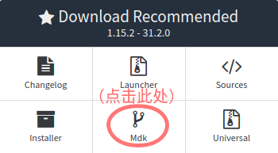
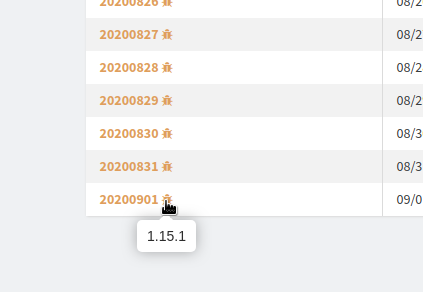
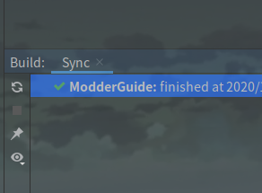

工作环境搭建
工作环境的搭建是一切的开始。工作环境的搭建，对于初学者来说是比较有挑战性的，也是最容易失败的。
相关软件安装
在搭建工作环境之前，我们需要先安装相关的软件。
首先就是JDK，JDK的安装没什么好讲的。只不过需要注意：当前的Forge仅支持JDK 8。
然后就是IDE，一般的Java书籍可能会选择Eclipse作为IDE，但我们为了Mod开发效率，建议选择IDEA作为IDE，请读者自行到IDEA官网下载。
最后就是Forge Mdk，到Forge官网下载即可。这里建议选择稳定版本 (Recommended)，本文使用的是32.2.0。下载完成后记得解压，解压路径不要包含中文、空格、感叹号等特殊字符。

至此，开发所需的软件，我们已经安装完毕，可以开始配置了。
修改工作环境配置文件
在开始之前，我们要先修改工作环境配置文件，即build.gradle文件。
我们先打开它 (尽量用Notepad++之类的工具打开，不要用记事本)，找到以下几行：(大约第16～18行)
version = '1.0'
group = 'com.yourname.modid'
archivesBaseName = 'modid'
根据自身情况修改。
如果搞不懂，可以查看以下内容：
Version 【点击展开】
version即版本号，如果你不知道怎么填，可以参考一个叫『语义化版本』的标准。
Group 【点击展开】
group即组id，通常使用Java包命名规范。这个字段的填写与你的网站有关，比如你的网站是github.com，那么你的组id就是：
com.github.<your_username>.<your_project_name>我的网站是bzstudio.xyz，则是：
xyz.bzstudio.modderguide如果你没有网站，也可以用自己的用户名：
<your_username>.<your_project_name>对于本教程，则是：
vvvbbbcz.modderguideMod ID 【点击展开】
即Mod的唯一标识符，一般写作modid。用于识别Mod，以及与其他Mod的区分。
需要注意一下几点：
- modid必须为全小写，不能使用除小写字母和下划线以外的其它符号。且modid不得超过64个字符。
- 在Mod发布后，就不能轻易改动modid，因为其他Mod都是根据modid来识别的。Minecraft也是根据modid识别的，随意改变modid不仅会对与你的Mod有联动的Mod造成影响，而且还会影响到玩家。
而archivesBaseName则是Mod最终导出的文件名
修改Mappings版本
再找到以下这行：(大约第28行)
mappings channel: 'snapshot', version: '20200514-1.15.1'
mappings版本，其实就是MCP版本。MCP版本越新越好，因为越新的版本意味着更准确的MCP Name，以及更少的类似func_xxxxxx_x的结构的方法。
MCP版本号分两种：
- stable - 即正式版。版本号格式为
stable_XX。 - snapshot - 即快照版，每天晚上更新。版本号格式为
YYYYMMDD-MCVersion。
我们推荐用stable，但由于1.15.2还没有stable，因此只能用snapshot，版本号格式为YYYYMMDD-MCVersion。
接下来，我们要修改mappings版本。
首先，到Forge的maven库，点击 “Show all Versions” ，然后翻倒最底，找到最新的版本号 (编写教程时，最新版本号为20200901)，旁边有个小虫子的图标，鼠标指过去，可以看到对应的Minecraft版本为1.15.1 (若你看到的版本高于1.15.2，请自觉往上翻，找到对应1.15.2的最新版)。

这样，我们获取到的mappings版本则为20200901-1.15.1，将原先的20200514-1.15.1替换即可。
注：mappings版本在小版本之间可以通用，例如1.14.3的mappings可以用于1.14.4。
修改Manifest信息
找到以下几行：（第115～127行）
jar {
manifest {
attributes([
"Specification-Title": "examplemod",
"Specification-Vendor": "examplemodsareus",
"Specification-Version": "1",
"Implementation-Title": project.name,
"Implementation-Version": "${version}",
"Implementation-Vendor" :"examplemodsareus",
"Implementation-Timestamp": new Date().format("yyyy-MM-dd'T'HH:mm:ssZ")
])
}
}
根据自己的情况修改即可。
开始配置
修改完配置文件，接下来就要开始配置了。这一步可能是Mod开发中最艰难的一步，由于网络原因，这一步极易失败，很多初学者就是在这时被劝退的。
我们打开Forge Mdk压缩包里的README.txt，然后根据自己的IDE，照着上面的做即可。如果使用Eclipse，在最后出现BUILD SUCCESSFUL，说明工作环境配置成功，如果最后出现BUILD FAILED则代表配置失败，此时请重新配置。如果你使用IDEA，你需要打开build面板，等待左侧显示绿色小钩。

由于网络问题，配置可能会极慢。因此，有条件的读者建议使用国外的代理或其他工具。如果你没有代理，建议使用ForgeGradleCN或离线包。其次，还有zzzz提供的代理可以选择 (我不知道这个代理还是否可用)。(引用内容有删改)
在此我们提供了一个免费Shadowsocks代理服务器来帮助您构建. 注意此代理只能用来构建Forge无法访问其他墙外网站:
server: forge-build-srar-telecom.ustc-zzzz.net
server_port: 65099
password: 9c4d5a9a6d97
method: rc4-md5Shadowsocks客户端默认监听
127.0.0.1:1080作为代理服务来运行。推荐使用的Shadowsocks客户端：https://github.com/shadowsocks/shadowsocks-windows/releases
设置代理
Eclipse的设置比较简单，直接在命令行末尾加上如下参数即可：
- 针对Socks代理：
-DsocksProxyHost=<主机名> -DsocksProxyPort=<端口号> - 针对Http代理：
-Dhttps.proxyHost=<主机名> -Dhttps.proxyPort=<端口号> - 针对Https代理：
-Dhttp.proxyHost=<主机名> -Dhttp.proxyPort=<端口号>
如果是IDEA，只要打开Settings，在左上角的搜索框里输入proxy，即可找到相应的设置。
完成之后
在配置完成后，先不要直接开始，先点击左上角 (Eclipse) 或右上角 (IDEA) 的运行按钮，尝试启动一下Minecraft。顺便看看External Libraries，里面的库是否正常。
启动极慢的解决方案
你或许会发现启动很慢，这是因为Forge1.13+使用了联网的方式启动，因此你可以参阅纪华裕的方法。